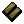
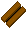
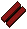
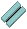
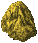

装備品の強化
１．概要
装備品の強化は、モンスターの戦利品やNPC販売品など標準素材（iron, leather, woodなど）からできた装備品に対して行います。
強化には特殊素材（dullcopper, barbed leather, heartwoodなど）が必要で、失敗し装備品が失われることもありますが、
強化に成功した場合、特殊素材の効果が装備品に追加されます。
対象スキル ： 鍛冶、裁縫、細工、大工、石工、弓工
２．装備品強化の手順
装備品の強化は下の流れで行います。
- 作成メニューを出して、強化に使用する素材を決定します（①、②）。
使用する素材の一番下にある「色をつけない」は、特殊素材の色を装備品に反映させないようにするボタンです。
- 強化ボタン（③）を押し、強化したい装備品をターゲットに指定します。
- 強化に成功すると、使った特殊素材の効果を反映した装備品となります。
なお、強化前の性能と使用する特殊素材の種類により、一定の確率で失敗または破壊します。
３．装備品強化に関する仕様
（１）必要スキル
装備品を強化しようとするとき、装備品と特殊素材に関連したスキルが必要となります。
- もととなる装備品を作成可能なスキル
- 強化に使用する特殊素材を扱うスキル
インゴット
| |
Dull |
Shadow |
Copper |
Bronze |
Gold |
Agapite |
Verite |
Valorite |
| 画像 |
 |
 |
 |
 |
 |
 |
 |
 |
| 必要スキル |
65.0 |
70.0 |
75.0 |
80.0 |
85.0 |
90.0 |
95.0 |
99.0 |
革
| |
Spined |
Horned |
Barbed |
| 画像 |
 |
 |
 |
| 必要スキル |
65.0 |
80.0 |
99.0 |
木材
| |
Oak |
Ash |
Yew |
Heart
wood |
Blood
wood |
Frost
wood |
| 画像 |
 |
 |
 |
 |
 |
 |
| 必要スキル |
65.0 |
75.0 |
85.0 |
95.0 |
95.0 |
95.0 |
花崗岩
| |
Dull |
Shadow |
Copper |
Bronze |
Gold |
Agapite |
Verite |
Valorite |
| 画像 |
 |
 |
 |
 |
 |
 |
 |
 |
| 必要スキル |
100.0 |
（２）強化できない装備品
生産スキルで作成できない装備品、帽子など布製の防具、既に強化された装備品（Artifactなど）を強化することはできません。
生産スキルで作成できない装備品は、以下のものです。
 long sword
long sword  crook
crook wand club(逆向き)
wand club(逆向き)
（３）使用する素材の量
強化の際に使用する素材の量は、もとの装備品を作成するために必要な量で、強化に成功したとき消費されます。
破壊するなど強化に失敗した場合、０〜「装備品を作成するのに必要な素材数の半分」までのランダムで素材を消費します。
（４）道具の消耗
強化を行うときに使用した作成用道具は、基本的に消耗しません。
ただし、鍛冶スキルが上昇するancient smith hammer[古代ハンマー]だけは、強化を行う度に1回ずつ消耗します。
（５）強化の効果
強化により装備品に付加される効果は、使用した特殊素材で作成したときに付加される効果と同じです。
素材情報＞特殊素材の効果(Publish81版)
（６）強化の成功率
強化の成功率は、以下の項目が影響します。
- 使用した特殊素材で強化されるパラメータについて、もととなる装備品での数値の高さが影響する。
基本的に、全く同じ性能の装備品を強化するとき、強化されるプロパティ数が多くなるほど強化成功率は下がる。
- 専門スキルの高さは、"スキルによる補正"に影響する。
"スキルによる補正"は、スキル100未満のときは補正なし、スキル100のときは+1、さらにスキル+10ごとに1％ずつ加算される。
鍛冶スキルを使用する強化の場合、スキル180でプロパティごとの成功率に9％のボーナスが加算される。
- 種族がガーゴイルでImbuing[練成]スキルが一定以上あれば、"スキルによる補正"に最大3％加算される。
- Imbuing = 100〜109.9 ： 1％
- Imbuing = 110〜119.9 ： 2％
- Imbuing = 120.0 ： 3％
―強化結果の発生確率―
- 各属性抵抗値の強化
成功率 ： 80−（強化前の属性抵抗値）＋（スキルによる補正）[％]
破壊率 ： 10＋（強化前の属性抵抗値）−（スキルによる補正）[％]
失敗率 ： 10[％]
- 耐久性の強化
成功率 ： 80−（強化前の耐久性 / 40）＋（スキルによる補正）[％]
破壊率 ： 10＋（強化前の耐久性 / 40）−（スキルによる補正）[％]
失敗率 ： 10[％]
- 装備条件の強化
成功率 ： 80−（装備条件 / 4）＋（スキルによる補正）[％]
破壊率 ： 10＋（装備条件 / 4）−（スキルによる補正）[％]
失敗率 ： 10[％]
- 幸運の強化
成功率 ： 70−（強化前装備品の運 / 2）＋（スキルによる補正）[％]
破壊率 ： 20＋（強化前装備品の運 / 2）−（スキルによる補正）[％]
失敗率 ： 10[％]
- 攻撃属性の強化
成功率 ： 80−（強化前の属性攻撃比率 / 4）＋（スキルによる補正）[％]
破壊率 ： 10＋（強化前の属性攻撃比率 / 4）−（スキルによる補正）[％]
失敗率 ： 10[％]
- HP回復の強化 （暫定）
成功率 ： 80−（強化前のHP回復値×10）＋（スキルによる補正）[％]
破壊率 ： 10＋（強化前のHP回復値×10）−（スキルによる補正）[％]
失敗率 ： 10[％]
- 武器ダメージの強化 （暫定）
成功率 ： 80−（強化前の武器ダメージ / 4）＋（スキルによる補正）[％]
破壊率 ： 10＋（強化前の武器ダメージ / 4）−（スキルによる補正）[％]
失敗率 ： 10[％]
- 命中の強化 （暫定）
成功率 ： 80−（強化前の命中 / 2）＋（スキルによる補正）[％]
破壊率 ： 10＋（強化前の命中 / 2）−（スキルによる補正）[％]
失敗率 ： 10[％]
- 速度の強化 （暫定）
成功率 ： 80−（強化前の速度 / 2）＋（スキルによる補正）[％]
破壊率 ： 10＋（強化前の速度 / 2）−（スキルによる補正）[％]
失敗率 ： 10[％]
- ライフリーチ （暫定）
成功率 ： 80−（強化前ライフリーチ強度 / 2）＋（スキルによる補正）[％]
破壊率 ： 10＋（強化前ライフリーチ強度 / 2）−（スキルによる補正）[％]
失敗率 ： 10[％]
- 重量軽減、ランダムプロパティの付加 （暫定）
成功率 ： 80＋（スキルによる補正）[％]
破壊率 ： 10−（スキルによる補正）[％]
失敗率 ： 10[％]